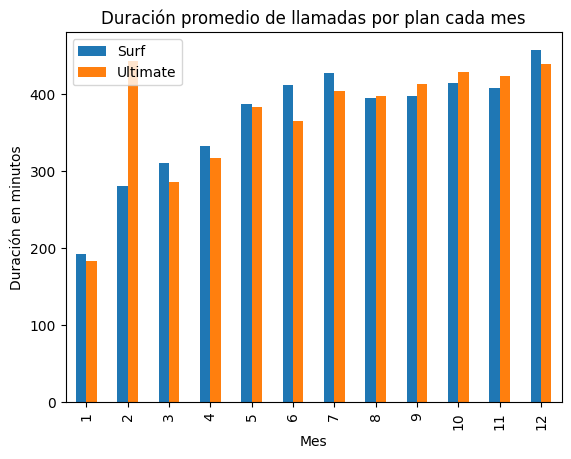
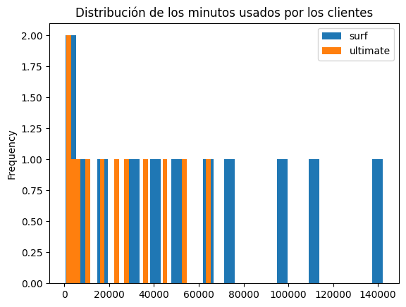
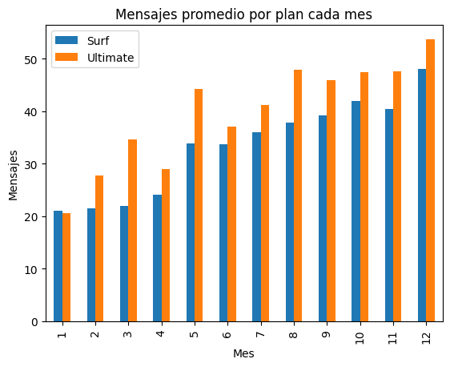
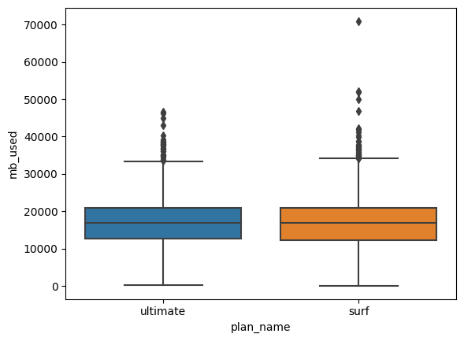
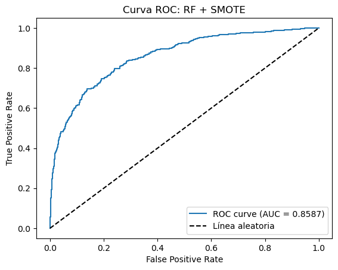
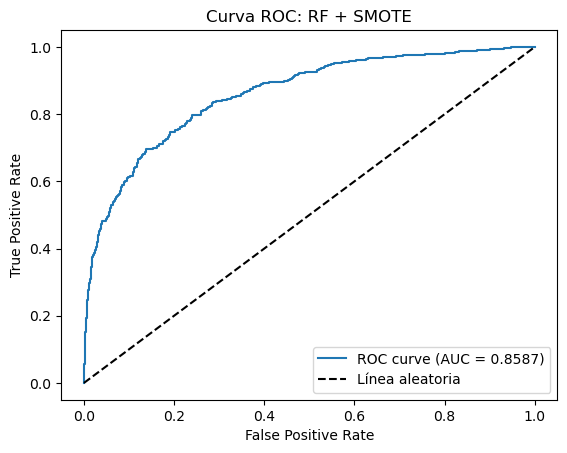

×
Megaline — Descriptive & Inferential Statistics
Statistical analysis of telecom customer behavior to identify revenue differences between two prepaid mobile plans.
Project Overview
This project applies descriptive and inferential statistics to explore customer usage patterns and revenue generation. The objective is to understand which prepaid plan—Surf or Ultimate—brings higher earnings for Megaline.
Problem: The commercial department needs to determine which plan generates higher revenue to optimize advertising budget allocation.
Technologies & Tools: Python (pandas, numpy, scipy, matplotlib, seaborn, math), Jupyter Notebook, VS Code
Exploratory Data Analysis
- Average call duration by plan and month
 - Monthly minutes per plan
 - Average messages per plan
 - MB consumed per plan
 - Average monthly revenue per plan

Conclusion
- No significant differences were found in call duration, messages sent, or monthly data usage between the two plans.
- A t-test revealed a significant difference in average revenue: the Ultimate plan generates more income on average.
- Surf plan shows higher revenue volatility due to users generating extra charges through exceeding usage.
- Ultimate’s large minute allowance may be excessive, as most users consume less than what is offered.
- Data consumption in Surf increases in the last months of the year, suggesting opportunities for data-focused commercial strategies.
- Megaline should target atypical high-consumption users, who generate the highest revenue, either within existing plans or with a redesigned offer.
 
